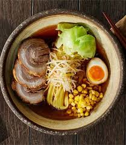
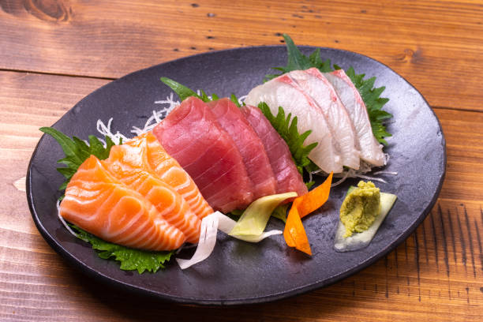
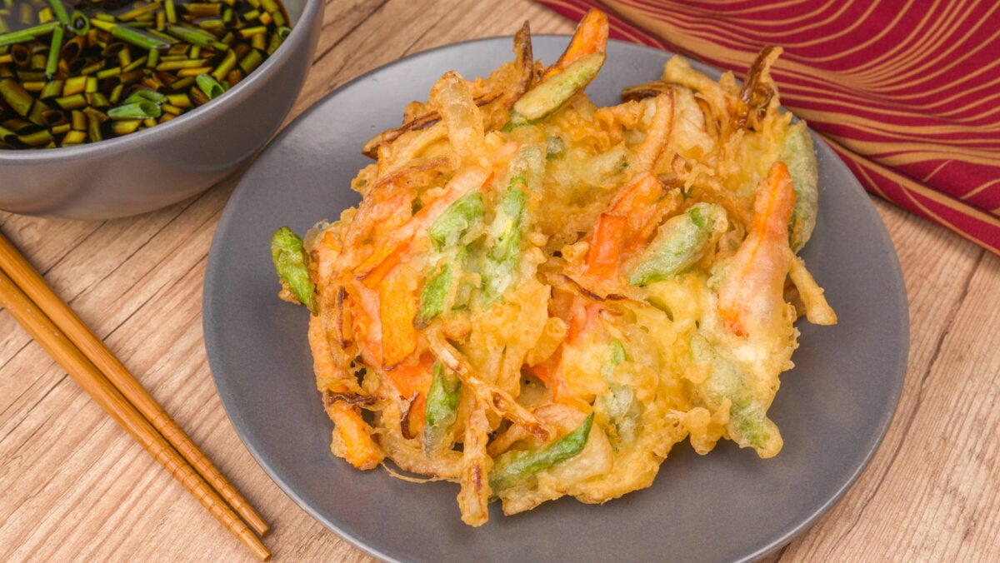
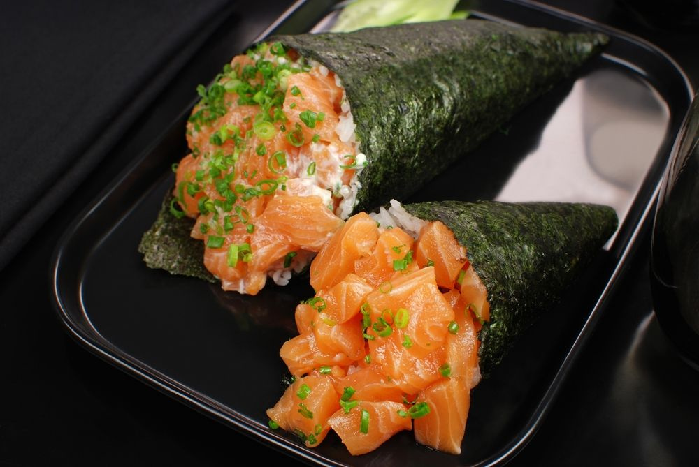
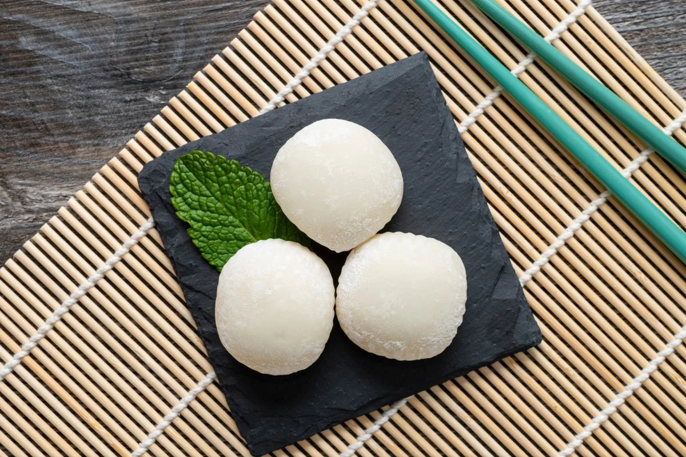
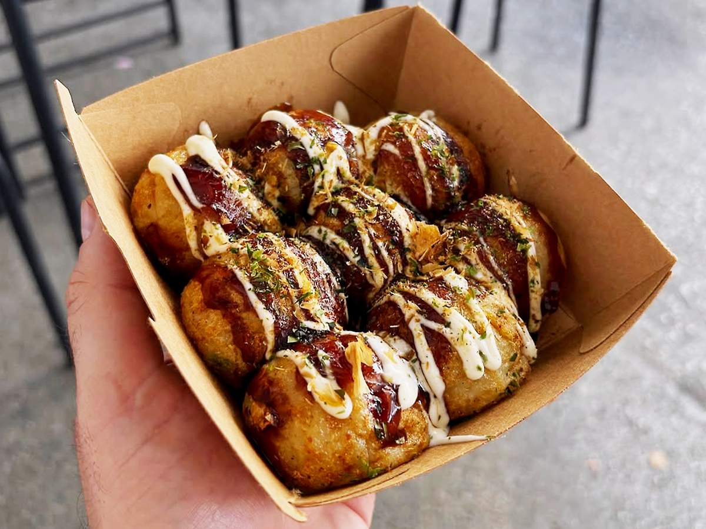
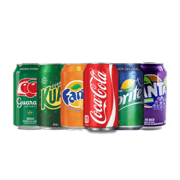

| Prato |
Descrição |
Preço |
Imagem |
| Sushi |
Arroz temperado com vinagre, servido com peixe cru, frutos do mar ou vegetais. |
R$5,00 - peça |
 |
| Ramen |
Sopa de macarrão com caldo rico, carne, ovo e legumes. |
R$25,00 - tigela |
 |
| Sashimi |
Fatias finas de peixe cru, servidas sem arroz. |
R$10,00 - peça |
 |
| Tempurá |
Legumes ou frutos do mar empanados e fritos. |
R$20,00 |
 |
| Temaki |
cone de alga (nori) recheado com arroz temperado e ingredientes como peixe cru (geralmente salmão ou atum), cream cheese, pepino, cebolinha, entre outros. |
R$20,00 |
 |
| Missoshiru |
Sopa de missô com tofu, cebolinha e algas. |
R$10,00 |
 |
| Mochi |
Doce feito de massa de arroz glutinoso (macio e elástico), geralmente recheado com anko (pasta doce de feijão vermelho), sorvete ou frutas. Textura única e sabor suave. |
R$8,00 - peça |
 |
| Takoyaki |
Bolinhos de massa recheados com polvo e coberturas. |
R$20,00 - 6 unidades |
 |
| Sucos |
Laranja, Maracujá, Limão, Morango e Abacaxi com hortelã. |
R$12,00 - jarra |
 |
| Refrigerantes |
Opções da imagem - 350ml. |
R$6,50 |
 |
Taxa de serviço=10% |